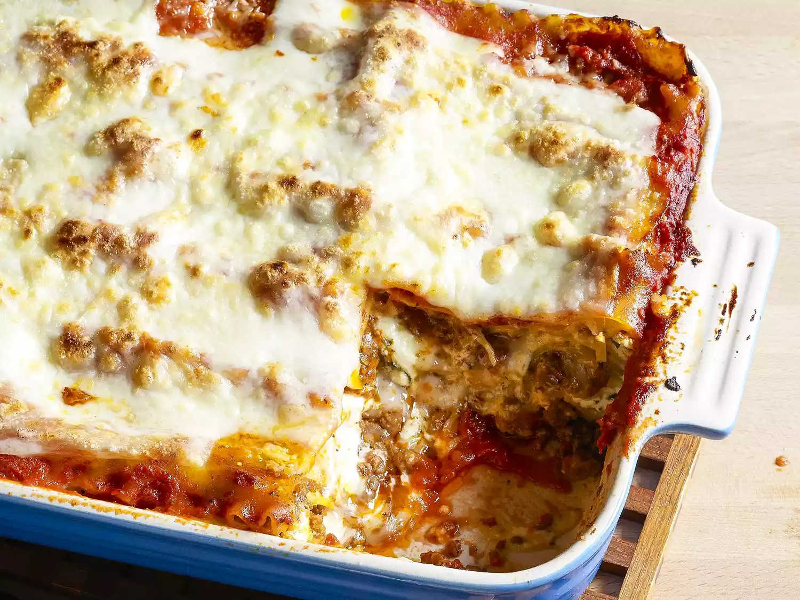

Lasagna

Description
Lasagna is a wide, flat sheet of pasta. Lasagna can refer to either the type of noodle or to the typical lasagna dish which is a dish made with several layers of lasagna sheets with sauce and other ingredients, such as meats and cheese, in between the lasagna noodles.
Ingredients
-
Meat:This super meaty lasagna has sweet Italian sausage and lean ground beef.
-
Onion and Garlic: An onion and two cloves of garlic are cooked with the meat to add tons of flavor.
-
Tomato Products: You'll need a can of crushed tomatoes, two cans of tomato sauce, and two cans of tomato paste.
-
Sugar: Two tablespoons of white sugar add subtle sweetness and enhance the flavor of the sauce.
-
Spices and Seasonings: This lasagna recipe is flavored with fresh parsley, dried basil leaves, salt, Italian seasoning, fennel seeds, and black pepper.
-
Lasagna Noodles: Use store-bought or homemade lasagna noodles.
-
Cheeses: Parmesan, mozzarella, and ricotta cheese make this lasagna extra decadent.
-
Egg: An egg helps bind the ricotta so it doesn't ooze out of the lasagna when you cut into it.
Steps to make Lasagna
- Make the meat sauce.
- Cook the noodles
- Make the ricotta mixture
- Layer the lasagna according to the recipe instructions.
- Cover with foil and bake.
- Let the lasagna rest before serving.
How to Layer Lasagna
- Meat Sauce
- Noodles
- Ricotta mixture
- Mozzarella slices
- Meat sauce
- Parmesan cheese
- Repeat the layers, then top with the remaining Parmesan